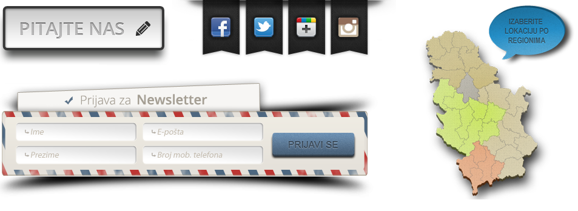
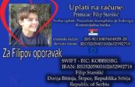
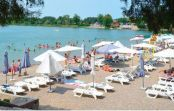

Humanitarna akcija tokom ture Proleće na Šar - planini 24-26. maja 2019.
Humanitarna akcija tokom ture Proleće na Šar - planini 24-26. maja 2019.
Kao što smo i najavili naše 12. putovanje na Šar - planinu imalo je i humanitarni karter. Ovoga puta sakupili smo 27800 RSD i ...
Kape i šalovi
Već deset godina proizvodimo udobne, jedinstvene, mekane, tople kape i šalove od uvezenog prediva, sastava 100% merino vuna. Želja da obradujete sebe i sebi drage osobe neobičnim i kvalitetnim, unikatnim proizvodima izradjenih spojem i do 10 niti vrhuns

Belocrkvanska jezera
Bela Crkva se nalazi u Južnom Banatu, sto kilometara istočno od Beograda. Uz sam grad smeštena su i Belocrkvanska jezera: Glavno, Vračevgajsko, Šaransko, Šljunkara...koja predstavljaju jedinstvenu turističku ponudu u Vojvodini.
Belocrkvanska jezera
Bela Crkva se nalazi u Južnom Banatu, sto kilometara istočno od Beograda. Uz sam grad smeštena su i Belocrkvanska jezera: Glavno, Vračevgajsko, Šaransko, Šljunkara...koja predstavljaju jedinstvenu turističku ponudu u Vojvodini.
Facebook